Lazer Kesim Kullanım Rehberi
Nesting planlarından lazer kesimleri oluşturan, kesim dosyalarını hazırlayan ve kesimlerin nesting, kesim ve büküm durumlarını izleyen uygulama. Rehber iki bölümden oluşur: önce sayfalar ve pencereler özetlenir, ardından bir demo plan için kesim akışı adım adım anlatılır. Ekranlardaki bütün veriler uydurmadır: uygulama demo modunda, BK Sipariş rehberiyle aynı yerel test veritabanıyla açılmıştır.
Uygulama ne işe yarar?
Lazer Kesim, BK Sipariş’te siparişi açılıp toplu olarak “nesting planı” olarak gönderilen sac parçalarını kesime hazırlayan ve kesimi baştan sona izleyen uygulamadır.
Öne çıkan
Metalix’e uyumlu CSV çıktısıKesime alınan bütün parçalar, Metalix nesting programına doğrudan aktarılabilen CSV dosyası olarak hazırlanır; parça listesini elle girmek gerekmez.Öne çıkan
Kesilen sac stoktan kendiliğinden düşerKesim bittiğinde kesimde kullanılan sac tabakalar hem adet hem kilogram olarak sac stoğundan düşülür; stoğu elle güncellemek gerekmez.Kesim oluşturmaNesting planlarındaki sac parçalarını derleyip tek bir kesim altında birleştirme
Dosya hazırlığıParçaların DXF ve PDF dosyalarını sipariş numarasıyla kesim klasörüne kopyalama
Kesim takibiKesimlerin nesting, kesim ve büküm aşamalarını izleme
Metalix raporu işlemeKesim bitince Metalix raporunu işleyip her parçanın ağırlık, hurda sac ve kesim süresi bilgilerini kaydetme
Başlarken
Giriş ve ana pencere
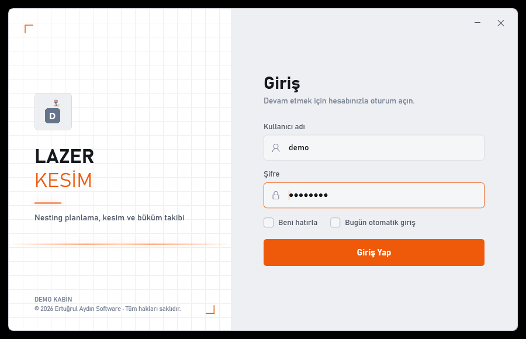
- Kullanıcı adı ve şifrenizle giriş yapın. Beni hatırla bilgileri bu bilgisayarda saklar; Bugün otomatik giriş gün boyunca pencereyi atlar.
- Açılışta güncelleme klasörü kontrol edilir; yeni sürüm varsa uygulama kendini günceller.
- Üst çubuktaki Tasarım düğmesi klasik ve yeni tasarım arasında, ay/güneş simgesi yeni tasarımın koyu ve açık teması arasında geçiş yapar. Seçim saklanır.
Demo modu: Ekranlar uygulamanın --demo argümanıyla açılan demo modunda alınmıştır. Bu modda uygulama yalnızca yerel BKSiparis_Demo veritabanına bağlanır; Trello’ya yazılmaz, güncelleme kontrolü yapılmaz, kesim klasörleri ve ayarlar ayrı bir demo klasörüne yazılır. Planlar, siparişler ve kişiler uydurmadır.
1. Bölüm · Genel bakışİki sayfa ve açılan pencereler. Bir kutuya tıklayınca ilgili anlatıma gidersiniz.
Sayfalar ve pencereler
Üst çubuk › Planlar, Kesimler
Sayfalar
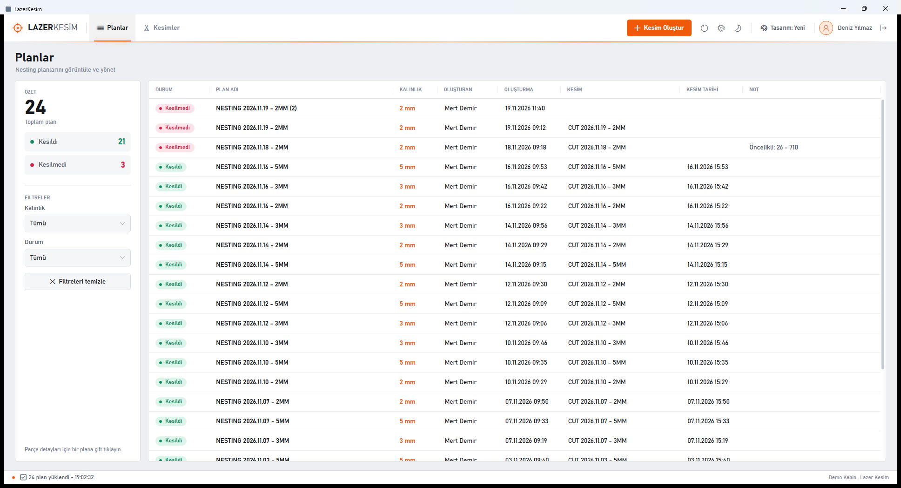
PlanlarNesting planları, özet ve filtreler
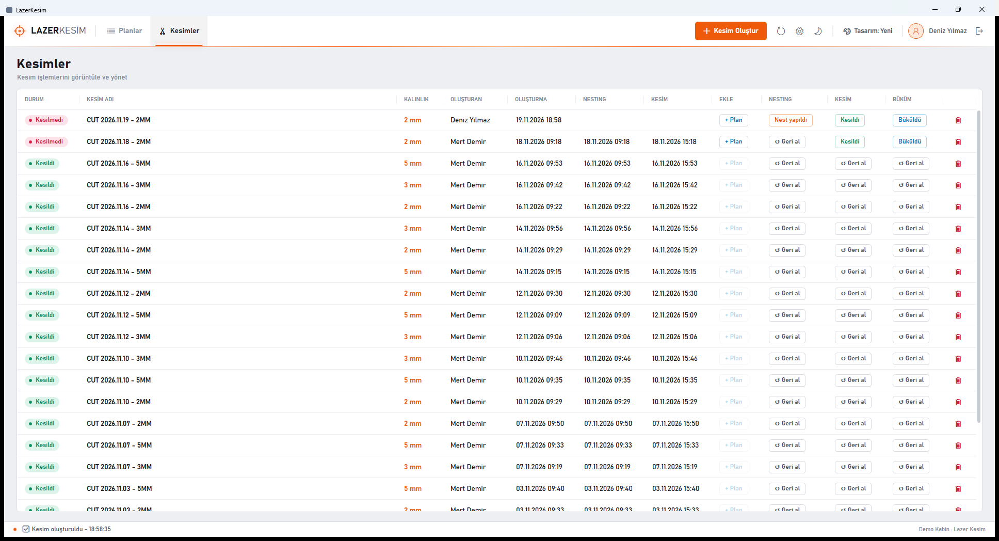
KesimlerKesimler ve nesting, kesim, büküm durumları
Pencereler
2. Bölüm · Ayrıntılı kullanımDemo planı NESTING 2026.11.19 - 2MM (26 - STK 31 siparişinin 2 mm parçaları) için kesim oluşturma, nesting’i işaretleme ve kesimi izleme.
Planlar
Üst çubuk › Planlar
- Nesting programında hazırlanıp kesime gönderilen planlar burada listelenir; en yeni plan en üsttedir.
- Durum rozeti planın kesilip kesilmediğini gösterir. Not sütunu plana yazılan notu (ör. “Öncelikli: 26 - 710”) gösterir.
- Sağ üstteki yenile simgesi listeyi veritabanından yeniden okur.
- Bir plana çift tıklayınca Parça Detayları açılır.
Filtreler
Planlar › Filtreler
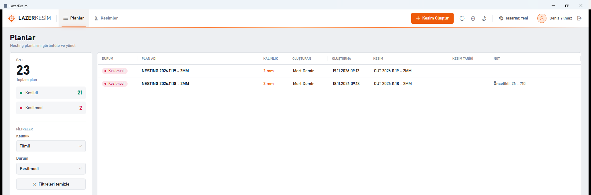
- Kalınlık ve Durum listeleri tabloyu süzer; ikisi birlikte kullanılabilir.
- Filtreleri temizle bütün planları yeniden gösterir. Alttaki durum satırı kaç planın gösterildiğini yazar.
Parça Detayları
Planlar › plana çift tıklama
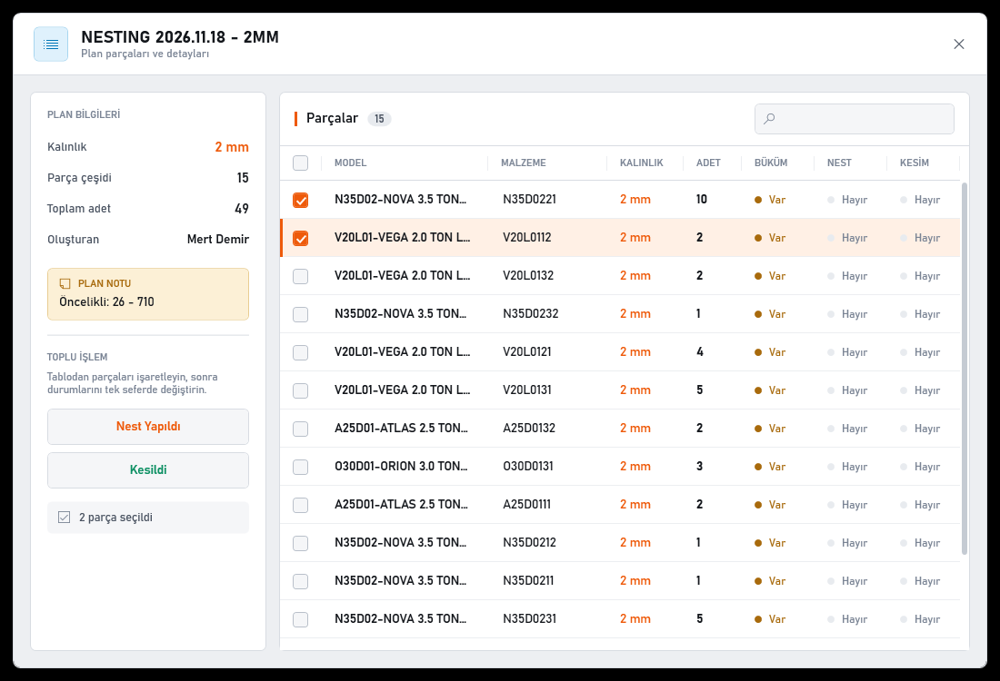
- Solda planın kalınlığı, parça çeşidi, toplam adet, oluşturan ve plan notu yer alır.
- Tabloda her parçanın modeli, malzeme kodu, kalınlığı, adedi ve büküm, nest ve kesim durumları görünür. Sağ üstteki kutu tabloyu arar.
- Parçaları işaretleyip Nest Yapıldı ya da Kesildi’ye basarak durumlarını tek seferde değiştirin.
Kesim oluşturma
Üst çubuk › Kesim Oluştur
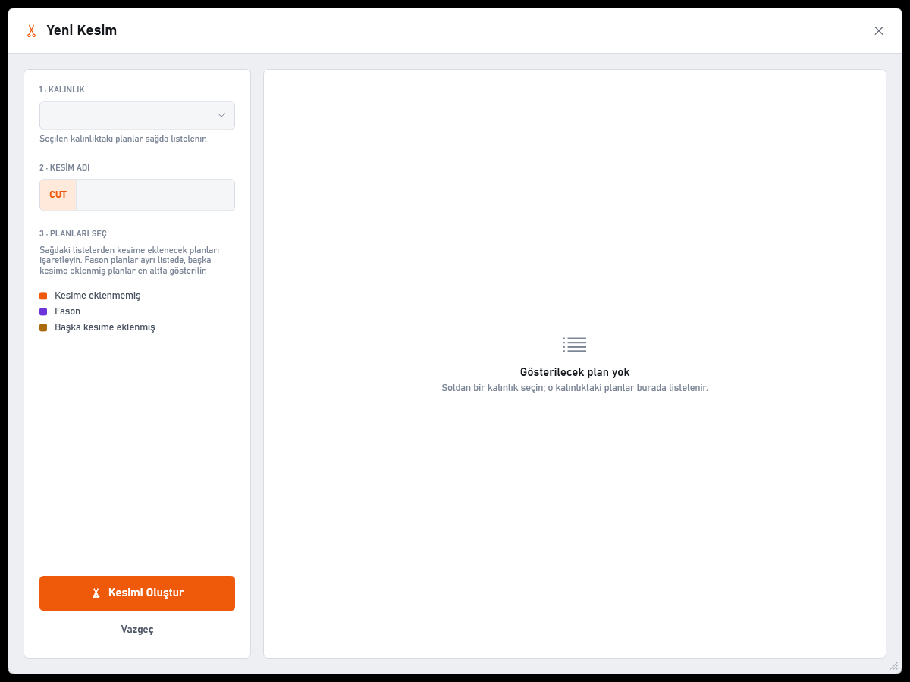
- Kalınlık seçin; o kalınlıktaki planlar sağda listelenir.
- Kesim adı tarih ve kalınlıktan kendiliğinden oluşur; aynı ad varsa sonuna _2, _3 eklenir. İsterseniz değiştirin.
- Planlar üç listede gelir: kesime eklenmemiş (turuncu), fason (mor) ve başka kesime eklenmiş (kahverengi). Kesime eklenecek planları işaretleyin.
- Kesimi Oluştur’a basın ve onaylayın.
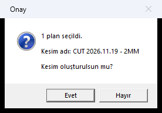
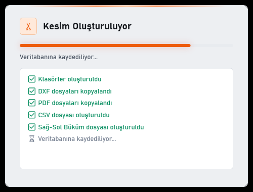
Kesim klasörü, Ayarlar’daki Masaüstü klasörü altında tarih klasörünün içinde oluşur (ör. 2026.11.19\CUT 2026.11.19 - 2MM). Parçaların DXF ve PDF dosyaları, dosya adına sipariş no eklenerek buraya kopyalanır; ayrıca Metalix nesting programına doğrudan aktarılan CSV ve .ord dosyaları ile sağ-sol bükümlü parçaların listesi yazılır.
Kesimler
Üst çubuk › Kesimler
- Her kesimin durumu, kalınlığı, oluşturanı, oluşturma, nesting ve kesim tarihleri görünür.
- + Plan henüz kesilmemiş kesime plan ekler.
- Nesting, Kesim ve Büküm sütunlarındaki düğmeler kesimi sırayla bir sonraki aşamaya geçirir; aşama tamamlanınca düğme Geri al olur ve son işlemi geri alır.
- Kesildi ve Büküldü işaretlendiğinde kesimdeki plan ve parçalar güncellenir ve siparişlerin Trello kartlarına bilgi yorumu yazılır; Geri al bu yorumları siler.
- Satır sonundaki çöp kutusu kesimi siler; kesim klasörü de silinebilir.
- Bir kesime çift tıklayınca Kesim Detay açılır.
Nesting’i işaretleme
Kesimler › Nest yapıldı
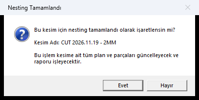
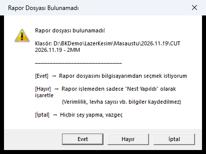
- Metalix’te yerleşim bitince Nest yapıldı’ya basın.
- Uygulama kesim klasöründeki Metalix XML raporunu arar ve işler: levha sayısı, verimlilik, kesim süresi, ağırlık ve alan bilgileri kesime kaydedilir.
- Rapor bulunamazsa Evet ile dosyayı kendiniz seçebilir, Hayır ile raporsuz işaretleyebilirsiniz (bu durumda rapor bilgileri kaydedilmez).
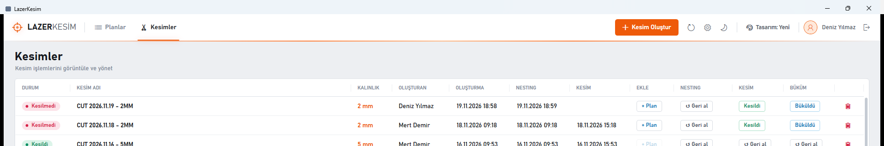
Kesim Detay
Kesimler › kesime çift tıklama
- Üstte kesimin kalınlığı, oluşturanı, durumu ve oluşturma tarihi yer alır.
- Soldan bir plan seçince sağda o planın parçaları listelenir. Her iki listenin üstündeki kutu arama yapar.
Kesime plan ekleme
Kesimler › + Plan
- Yalnızca kesimin kalınlığındaki, henüz bir kesime eklenmemiş planlar listelenir.
- Planları işaretleyip Planları Ekle’ye basın; dosyaları kesim klasörüne kopyalanır ve plan kesime bağlanır.
Ayarlar
Üst çubuk › Ayarlar (dişli)
- Dosya kayıt konumu kesim raporlarının, Masaüstü klasörü kesim klasörlerinin oluşturulduğu yerdir.
- Alternatif sunucu adı: veritabanındaki ağ yolları açılmazsa yoldaki sunucu adı bu değerle değiştirilir.
- Güncelleme kaynağı: açılışta version.txt dosyasına bakılan klasör; boşsa güncelleme kontrol edilmez.
- Sipariş no ayracı: kopyalanan dosyanın adına sipariş no eklenirken araya giren karakter (ör. parca_12345.dxf).
- Veritabanı: SQL Server bağlantı bilgileri; Bağlantıyı test et ile denenir, kaydedilince hemen uygulanır.